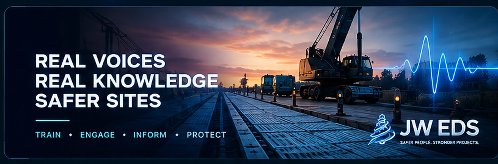

REAL VOICES.
REAL KNOWLEDGE.
SAFER SITES.
CREATE · CLONE · GENERATE · DEPLOY
Recent Libraries
Create Voice Library
Describe what the app needs. JW EDS turns it into a structured phrase pack.
Clone Voice
Upload a reference file or record directly. The sample is stored locally on this device and can be used directly by the on-device cloning engine.
Saved voice profiles
Generate speech with a saved clone
ON-DEVICE CLONEChoose a saved voice, type what you want it to say, and generate the WAV directly on this iPad. No API key or external voice service is required. The first use downloads the compact speech model (about 150 MB); later runs use the browser cache.
Voice engine
Voice Designer
Create a reusable AI voice brief and audition it before rendering a full library.
My Libraries
Open saved cloned voices and phrase packs, preview them, then reuse them directly.
Settings
On iPad, voice cloning runs directly in Safari using a compact ONNX speech model. A companion computer remains optional for advanced use.